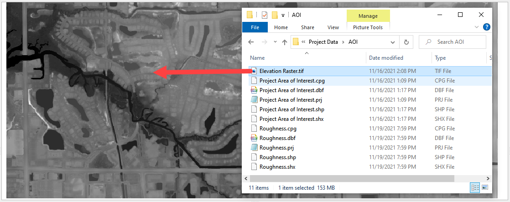

Create a Grid
Overview
This module will outline how create a grid using QGIS, FLO-2D Plugin and project data. Calculate elevation and roughness to the grid.
Required Data
The required data is in the Coastal 2D Training Folder.
File |
Content |
|---|---|
*.tif |
Elevation Raster |
*.shp |
Project AOI |
*.shp |
Manning_n |
Path: …\Coastal 2D Training\Project Data\AOI
Step 1: Set up the FLO-2D project
Open QGIS 3.22.9 or newer.
Drag the Project Area of Interest shapefile onto the map.
Path: …\Coastal 2D Training\Project Data\AOI

Click the Set-up button.
Click create.
Save the geopackage file to the project folder.
Name the file Coastal Project.gpkg.
Path: …\Coastal 2D Training\Coastal Project.gpkg
Set the project CRS to Florida East HARN USft. Filter the list with an EPSG code: 2881. Select EPSG: 2881 and click OK.
Wait for the geopackage to write and check the accuracy of the project settings and click OK.
Step 2: Create the grid
From the Grid Tools widget, select Create Grid.

Select the Project Domain layer, and the Cell Size field and click OK.
Note
The Project Area of Interest is a simple template. If your own project doesn’t have a polygon layer that represents the project area, one can be digitized into the Computational Domain Layer. In order to align the grid to a raster, load the raster file into the dialog box.
Click OK to close. The grid is complete.

Step 3: Save the project
Click the main Save button on the QGIS toolbar.
Navigate to the coastal folder, name the project Coastal Project.qgz and click Save.
Path: …\Coastal 2D Training\Coastal Project.qgz
Step 4: Assign grid elevation
Uncheck the Project Area of Interest Layer.
Click the Computational Domain Layer
Import the elevation file. Open the project folder and drag the Elevation Raster.tif file onto the map space.
\Coastal 2D Training\Project Data\AOI\Elevation Raster.tif
Move the elevation raster layer to the bottom of the layers list and click it to activate the Elevation layer.

To interpolate the elevation to a grid layer from a raster layer, use the Sample Grid Elevation button.
Click on the Sample Grid Elevation button and enter the required data in the dialog fields and click OK.
Sampling Done dialog box will appear once the process is complete. Click OK to close it.
Note
Use the Fill NoData option if the elevation raster is missing data such as buildings. This method uses the GDAL Warp processing tool. To learn more about GDAL Warp, visit this page:
Step 5: Assign roughness data
Open the project folder and drag the Mannings_n.shp file onto the map space.
Click the Sample Roughness button.
Fill the dialog box and click OK.

Once the sample is complete, the following window will appear. Close the window. It is OK if your time is different from the time in the following image.

The roughness values and elevations are assigned to the grid layer in the Schematized Layers group. Use the Grid Info Tool to see individual values for each cell.
Click the Grid Info button and then click any grid element in the map area.


Step 6: Assign Control Variables
Click the Set Control Parameters Button.

Fill the dialog box using the two figures below. Save the data to the GeoPackage with the Save button.
Note
The variable descriptions and additional instructions are presented in the Data Input Manual.
C:\Users\Public\Documents\FLO-2D PRO Documentation\flo_help\Manuals\Data Input Manual PRO.pdf


Step 7: Save the project
Click the main Save button on the QGIS toolbar.

Step 8: Create a backup file
Close QGIS.
Open the project folder. Select the Coastal Project.gpkg and Coastal Project.qgz files. Right click them and click Sent to/Compressed (zipped) folder.

Name the zipped file. It is good to choose a name that identifies project progress. For Example: Elevation and nvalue OK.zip
Open QGIS and reload the project.

Click yes to load the model.